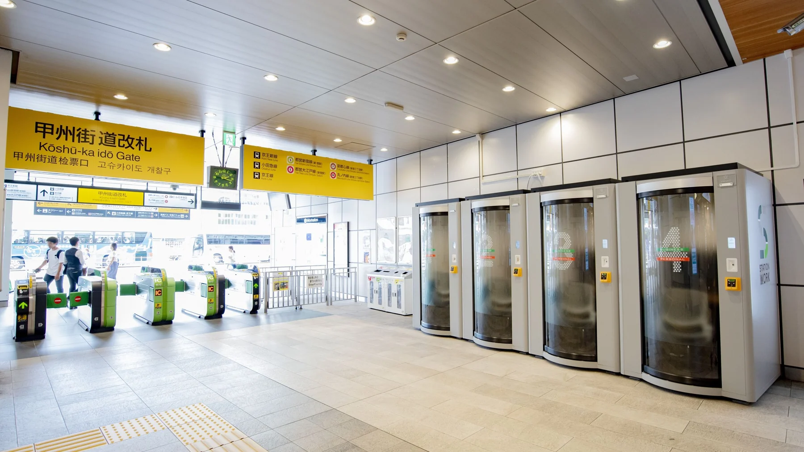
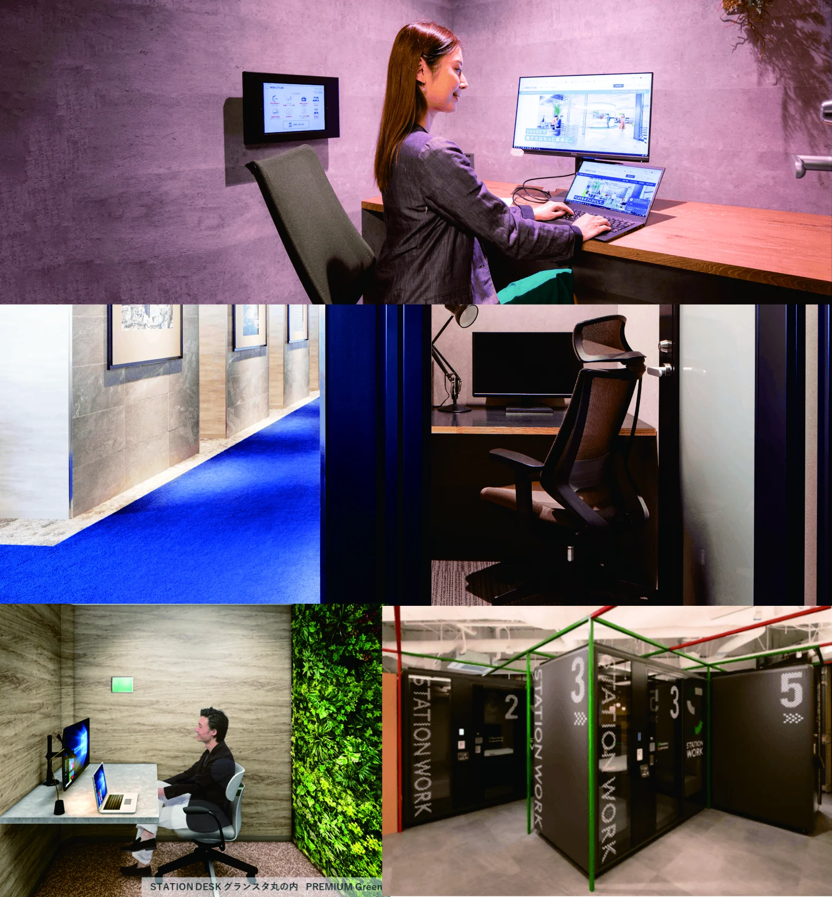
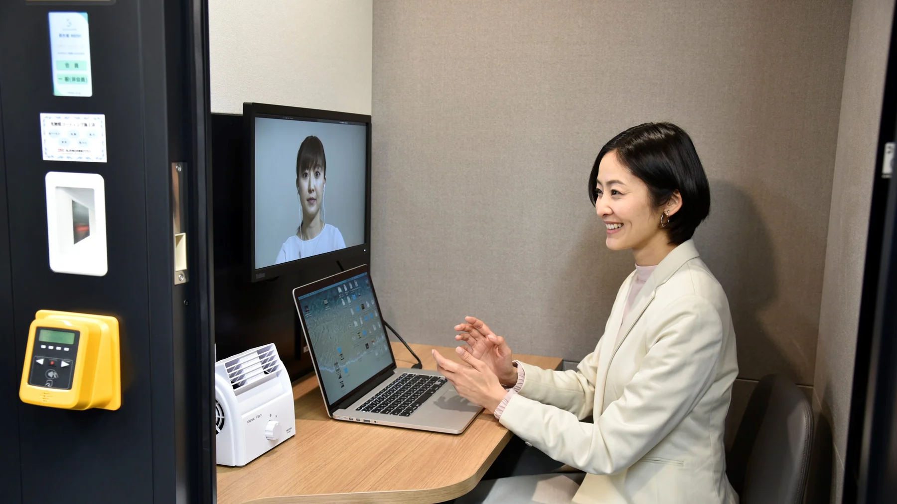
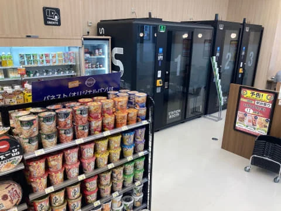
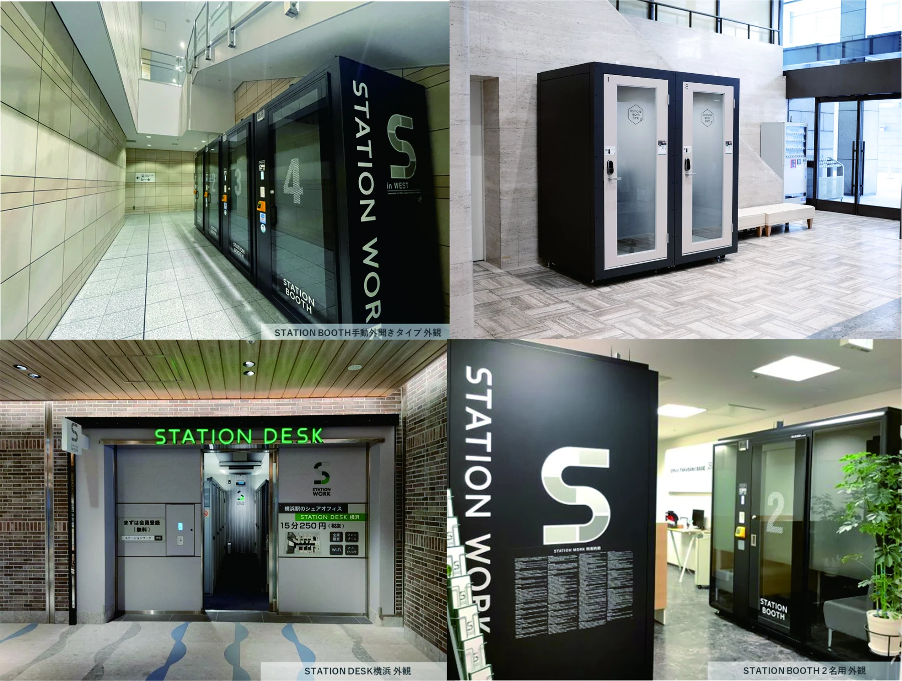

JR STATION WORK / 스마트한 일상적 업무지원을 위한 BYOD 공공오피스
JR BYOD 공공공간 'STATION WORK'
” JR 동일본이 전개하는 공공 공유 오피스 STATION WORK “
* BYOD
BYOD(Bring Your Own Device)은 노트북이나 스마트폰, 태블릿 PC 같은 디지털기기를 가지고 오라는 뜻으로 퍼스널 디바이스로 회사업무를 처리하는 사람들을 BYOD족이라 한다. 이 문구는 파티 안내 문구에 사용되던 BYOB(Bring your own bottle) 에서 유래되었다. 코로나 직후부터 재택 근무가 증가하면서 BYOD는 중요한 업무의 형태가 되었으며 BYOD족은 평균 2.4개의 퍼스널 디바이스를 소유하고 있다고 한다.
공공영역에서도 이러한 사회의 변화에 발맞추어 지원하는 디자인의 형태가 나타나고 있는데 JR 동일본이 전개하는 공공공간 STATION WORK 프로젝트이다.
출처_JR-EAST www.stationwork.jp

JR 동일본이 전개하는 공공 공유디자인 STATION WORK는 역 구내에서 개인 업무용 공간을 지원하는 프로젝트인데 전화 박스 정도의 크기의 업무용 부스 STATION BOOTH가 주 모델이며 이외에도 STATION DESK, 쉐어 오피스 등의 형태로 진화되어 나가고 있다. JR 동일본이 기획한 본 프로젝트는. 코로나에 의한 텔레워크, 웹 회의의 필요에 의해 이용률은 증가하고 있으며 현재는 동일본 지역뿐만 아니라 홋카이도와 서일본 지역에도 진출해 약 550거점, 회원수는 약 33만명을 넘어섰다고 한다.
출처_JR-EAST www.stationwork.jp

본 프로젝트는 JR 동일본의 경영 이념을 ‘인간을 기점으로 한 가치・서비스의 창조’로 전환을 내세운 직후 코로나 이전인 2018년 여름 기획하여 11월부터 실증 실험을 시작하고 검증하여 2019년 8월에 정식 서비스로 시작하였다. 실증 실험을 거친 이후 순조롭게 확대해 온 STATION WORK 사업이 그럴 수 있었던 이유는 신형 코로나로 인한 일 방식의 변화다. 본 프로젝트는 초기 기획단계부터 큰 반대없이 진행되었다 하는데 큰 면적을 차지하는 크기도 아니고 그와 유사한 프로젝트가 진행중이었고 무엇보다도 코로나로 인한 업무방식의 변화가 STATION WORK를 성공할 수 있게 한 일등 공신이었다.
STATION BOOTH의 실증 실험은 도쿄, 신주쿠, 시나가와의 3군데의 역에서 진행되었는데 실험이후 가장 많은 의견은 가장 많았던 것은 이것이 실험으로만 끝나는 건지? 여기에 설치하였으면 좋겠다라는 긍정적인 의견이 많았다 한다.
출처_JR-EAST www.stationwork.jp

STATION BOOTH는 STATION WORK의 메인 서비스로 개별 책상, 의자, 디스플레이와 같은 기본장비를 비롯해 시큐리티 Wi-Fi, 냉난방, anti-바이러스 시설 등을 완비하였고 대부분 역 구내에도 설치되었음에도 불구하고, 정적성이 높고 기차 소리도 들리지 않는다. 이용은 웹 회의나 일에 관한 작업을 하는 사람이 약 90%인데 온라인 영어 회화 공부, 유튜브, 휴식, 상담 등에 사용되는 등 다양한 용도로 확장되어 가고 있다.
출처_JR-EAST www.stationwork.jp

지금은 이 개념이 더욱 확장되어 우체국이나 관공서, 나머지는 카페에서도 웹 회의를 하고 싶은 사람이 많기 때문에 카페에도 조금씩 늘어나고 있다. 최근에는, 피트니스 짐이나 편의점에도 두고 있다. 센다이역에 있는 편의점에 워크 부스를 두었는데 런치 타임에 거의 만석이라고 한다.
출처_JR-EAST www.stationwork.jp

STAITION WORK는 향후 의료 서비스가 필요한 지방의 원격 의료 부스, 메타버스 부스 등 시대 변화와 요구에 즉각적으로 대응하면서 다양한 전개를 모색하고 있고 새로운 일 방식, 그리고 일본에 사는 사람들의 행복의 실현을 향해 변신을 계속하고 있다.
"STATION WORK"의 "WORK"에 대한 영어 정의는 소위 "일"만을 가리키지 않습니다. 개방형 혁신의 정신으로 다양한 지식을 가진 파트너와 협력하면서 서비스 부가가치를 추가함으로써 공공의 움직임·활동, 즉 “LIFE”를 승화할 수 있는 곳까지 진화해 나가고 싶습니다”
STATION WORK를 기획한 JR 동일본 나카지마 유키
참고 www.watch.impress.co.jp/docs/topic/1436187.html
www.travelvoice.jp/20230707-153711/print
www.stationwork.jp
이 글의 판본과 수록 정보 ＋
집필 폴더의 자료; 실제 작성자·집필 기여 미확정
서로 다른 제목의 관련 원고를 묶음. 수정본 관계·채택 제목 확인 필요. 본문·제목 대조로 기존 목록에서 빠진 PDF 판본을 추가 연결.
- 수록 자료
- JR 공공 업무지원공간 'STATION BOOTH'.hwp
- 자료의 날짜 단서
- 2024-02-16 · 실제 발표일과 다를 수 있습니다.
- 관련 파일
- 3개 / 서로 다른 본문 3종